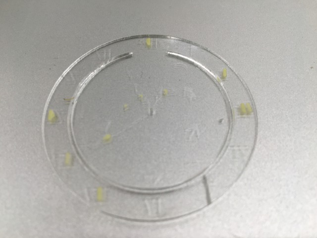

概要
とうとうやって来た。
高額な機材…存在は知っていたが。まさかもうアレらに触れる日が来ようとは。
いや、知っていたというか毎日のように横目で見ていたけど。だって教室の入り口真横にあるんだもの。
もはやアレらを目に納めずに教室に入るのは不可能と言っても過言ではあるまい。
そんな一歩間違えばダイナミックエントリーの餌食になりそうな機械たちだが。機械音痴が触れるにはちと高額に過ぎる。
今回の授業では、割と本気で爆発しないか心配だった。
とは言っても、だ。一応これ読んでる人を安心させるために、書いておくが…
今回爆発事故は無かった。おいコラ誰だ今舌打ちした奴
課題内容
さて、今回の課題では計5種類の機材について学んだ。学んだとは言っても座学ではなく実践形式での使用法学習だ。 仕組みなんかは自分の班が使用した機材しか知らない者も多いだろうから、復習ついでに一応別で仕組みをまとめたリンクの塊を作っとく。
- レーザー
- 3Dプリンター（ステレオリソグラフィー方式）
- カッティングプロッター載せるまでもない気もしないでもない
- UVプリンター
- デジタル刺繍ミシンはめっさ凄いミシン、で多分合ってる
ーーーあぁそう、班活動だったんだ。流石に一人一人全機材に触れるには時間も材料費も掛かり過ぎるし、3Dプリンターに至っては文字通り日が暮れかねない。
と、言うわけで、今回は機材ごとの班活動となり、自分の班の機材のプロフェッショナル的な何かになろー、というのが今回の授業だった。
班の数は5班、機材5種類のそれぞれに簡単な目標課題が設定されており、それを作成するのが今回の最終目標だそうで。
機材と課題のラインナップは以下の通り
- レーザー加工機（ペーパークリップ50×50）
- 3Dプリンター（キャップ30×30×30）
- カッティングプロッター（ステッカー45×45）
- UVプリンター（キーホルダー40×40）
- デジタル刺繍ミシン（ワッペン35×35）
教室の入り口、の時点で察しが付くかも知れないが。今回はレーザー加工機について学んだ。お値段は一台が軽自動車と同じくらいのヤツ。
取り敢えずイラレで絵を描いて、加工材料（うちの班はアクリル1mm）へ書き出すのが最初の課題だった。
・・・。
イラレ。Illustrator。
フッ…使えると思ったか。この私が。
と、いつもの流れで己の機械音痴を嘆くところだったが、今回は違った。
うちの親父から貰ったイラレの本の内容を実践するついでに名刺らしき何かを作っていたので、
一通りの使用法は幸いな事に予習済みだったのだ。
しかし、先生も言っていたが最新版にはイラレに限らずアドビの諸々には便利な機能がたくさん追加されている。
自分が望む工程の実行法を調べるたび『○○ やり方 CS6』みたいに検索する必要があって、面倒ったらありゃしない。
本は初歩の使い方しか書いて無かったし、第一絶賛貸出し中だったので検索する他無かったのだが。
それでも、いつもよりは苦戦せずに作業を進めることが出来た。
実践
そろそろ課題内容に移ろう。最初は描いた絵を材料に書き出す課題だった、という所まで説明したか。続き続き。
多分本番の予行練習的な何かだろうから、なるべく本番に活かせるような練習を…
と考えた結果、取り敢えずペーパークリップを作る事にした。
条件は最終課題と揃えて、実用性もまぁまぁ考えて最悪最終成果物として提出できるようにして。
切断は0.001pt赤線、掘りは黒。気を付けることといえばほぼこれだけだが、慣れない作業になかなか苦戦した。
一応データ作成手順の前書いたやつを転載しておく。課題なので。
↓手順↓
・まずIllustrator立ち上げて
・ファイル→新規→幅300mm、高さ150mm、ファイル名はお好みで
・『長方形ツール』を選択→その辺をクリックして、出たウィンドウ内の数値を50mm×50mmにする。
・幅300mm、高さ150mmの白い長方形の範囲内に収まるように配置して、選択ツールで選択されている状態で【表示】→【ガイド】→【ガイドを作成】
出来た青枠内に収まるように描いていきましょー
黒で掘り加工、赤線（#FF0000,幅0.001pt）で切断
基本的に切り絵と同じなので、赤線で囲まれた部分は切り落とされます。例えば｀A｀とデザインしたら三角の部分が亡くなる感じ。
この作業では湾曲した文字の配置が物凄く面倒だった。
最初は自由変形のような方法で整えたのだが、それだと視覚的には曲がっていてもデータ的には曲がっていない、と言う事態が起きたのだ。
結局、円環状に配置して、頑張ってペーパークリップに合わせてサイズ調節することとなった。
さらっと書いたがだいぶ時間掛かった。これだから機械は苦手なんだ。ちっとも思うように動いてくれない。
操作した通りに動く
さて、出来たのがこんな感じのやつ。
三日月の塊みたいなので、丸を組み合わせてたらそれっぽくなたので作った。
実際に加工して見てわかったのだが、加工痕、特に切断痕付近が熱からか、若干脆くなっているようだった。
あと、切り出しでのペーパークリップ、特に1mmとはいえアクリルで紙を束ねるのは予想以上に難しく。
柄だけ変えればいい、という訳にもいかず、形状から変える必要があった。
次に作ったのが、これ。

失敗作だ。マスキングテープを表面に貼ったのはいいのだが、表面の彫り加工が反映されなかった。
裏面に貼る分にはレーザーの反射を防ぐのにちょうど良かったので、次は裏面だけに…
あぁ、そうそう。
これが元々描いてたイラストだ。ちょっと複雑なの描いて、書き出したらどうなるな見てみようと思った次第で。
形状はあてにならないかもしれないが金属製のペーパークリップの切り出し方を参考にした。
加工動画。
上が両面にマステ貼って失敗した方、下が裏面だけマスキングテープを貼った、成功した方のペーパークリップの加工動画だ。
こちらが成功した方の最終成果物。↓

思ったより再現性が高かったが、彫りと塗りなしが入り組んだ部分は、通常の掘りに比べ陥没してしまっていた。
複数回にわたりほぼ同位置にレーザーが通ったため、熱が溜まったのが原因だと思われる。
追加課題
今回、余裕があったら自分の班以外の機材のデータも作ってみる、とのことなので番人（トカゲ）のアイコンを作ってみた。
実際に作ったとして上手く行った気がしない
背景着色忘れてた
違う、そうじゃない。初見の機械が思うように動いてくれないのはいつものことなのだ。つまりは
経験からの予測
だ。
愚者は何とかから学び（ry
一番の反省点としては著作権が挙がるだろうか。公開しない分には訴えられることはほぼないだろう。が、
アウトには変わりないのでその辺をすり抜ける術を身につけていきたい。
まとめ
多分次使う時は使い方とか八割がた忘れている気がする。ので、色々と覚書を認めといた。
確実に扱う機材とかがレベルアップ、というかステップアップしている。いつ躓くか正直気が気でない。
が、こうしてなんとか、これでも結構な時間を費やしてようやくだが。付いていけてるうちはこうして覚書を続けて行こうと思う。
躓いたらもう、多分それどころではない。